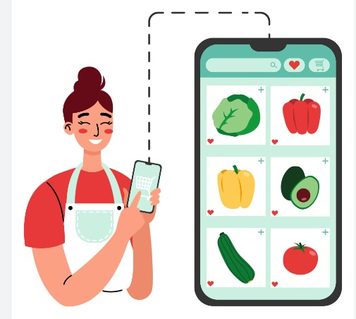
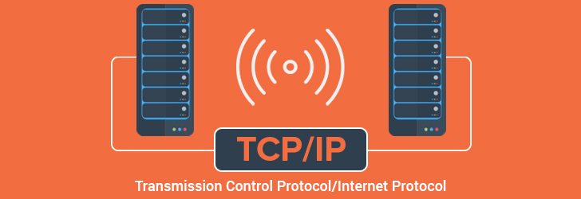

In this project, our team developed an online shopping website for fresh products using AngularJS and MySQL database. I took charge of the MySQL querying aspect, handling all database interactions and ensuring optimal performance and reliability throughout the project.


This project aims to learn TCP iterative client-server interaction using a socket
interface in Java programming language.
Implemented a broker server system facilitating song transactions, including tuple selection and wallet balance deduction upon song access. Utilized RMI technology for concurrent access, enabling publishers to add songs and customers to access them seamlessly.
In this project, I used machine learning process, linear regression and KNN to analyze the official 2015 World Happiness Report from the United Nations. In particular, I explored, wrangled and visualized the data and then modeled the Happiness Score and Region of countries based on the variables reported in the dataset.
In this project I looke at things like AI patent data, consumer debt data, interest rates and globalization affect jobs and economy. The objective of this project was to use Hadoop capabilities for processing the data and analyze the impact of data in the economy.